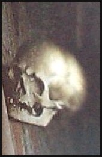
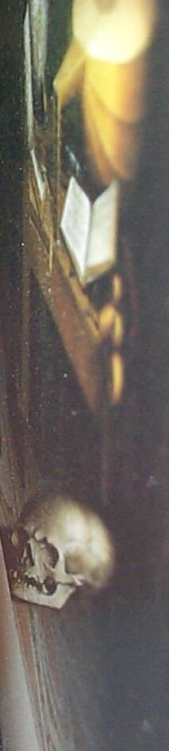

[BACK]
A detailed view, and a fuller view of what you will see:
 
Note: this is a "true" restoration using a digital camera to photograph a poster reproduction of the painting.
[Back to What is Anamorphosis?] [Anamorphosis main menu]